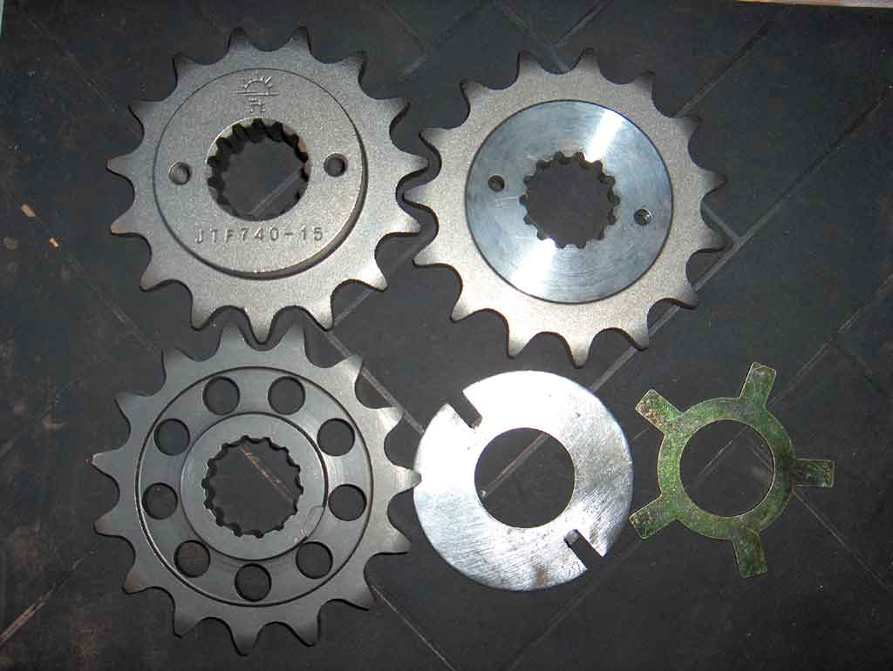
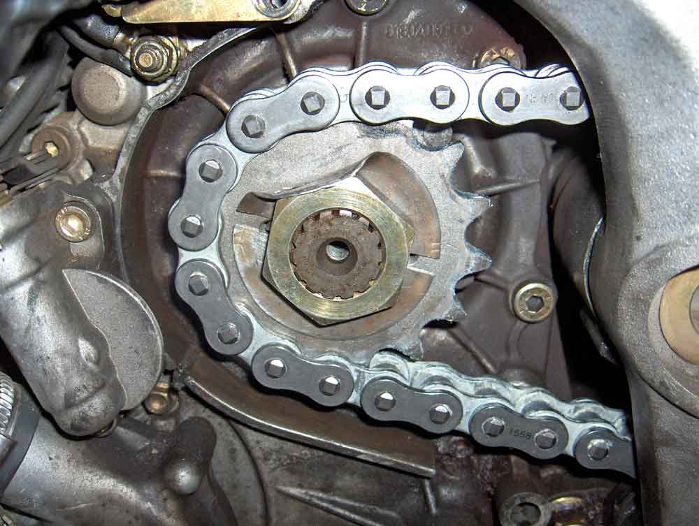

Alternate Front Sprocket
(13 May 2015)
Front Sprocket Alternatives - 14,15,16 tooth 525:-
Direct replacement
- AFAM (16 tooth) Part Number: 94900-16
- PBR do a direct replacement as well, in 15 & 16 tooth. Part Numbers : 2129-15 & 2129-16 (If I read their document correctly)
Try Red Racing Parts www.redracingparts.com
(PBR do a range of rear sprockets as well - all sizes between 36 & 46 teeth. Part Number: 4456 -xx, where xx is the number of teeth)
- Laurence, of Benelliforum fame, can supply the original part, but up to the present, has not had a source of suitable lock washers.
Pierpaolo, also of the forum, has recently discovered that the Ducati lock washer, P/N 85110041A, fits the Benelli output shaft.
In particular, it locks to the spline, which is good news for those who have sourced sprockets without the circular array of holes.
- Bike Torque Racing p/n:94900-15 No lockwasher apparent.
Modifiable replacement
- Ducati use a similar front sprocket on many models, including :-
944 Sport Tourismo ST2, 916 Strada Biposto, 916 SPS Sport Production, 992 ST3, 996, 998, 999 .....
Ducati Part Number 449-102-71A
- JT Sprockets Part Number JTF740-14, JTF740-15, JTF740-16
- AFAM Part Number 90-0563
- "MV Augusta - front sprocket is the same across all models so F4 1000 or 750. The center offset was only off by 1 or
2 mm. So I didn't bother to do any machining. Around $80 U.S. Dollar." (benmaw)
If you want to go to a 520 chain
- PBR p/n 2097 is a 15 tooth steel sprocket, without the circular array of holes. PBR 1031 is a 43 tooth alloy rear (rusty-pie 25 Mch 2012)
- JTF737-15, Ducati part Number 449-100-71A, which suits the '90-'93 917 Paso Sports. It does need machining both sides.
Modified JTF740-15
In Australia, Link International import JT Sprockets. Their Part Number for the JT740-15 is "41-D05-15". It is
retailed by most bike shops, including Canberra Motorcycle Centre (15% Ulysses discount) and Joe's Motorcycles.
The boss is offset, and needs to be machined down by 7mm (to 1 mm) to fit, but otherwise it is a much cheaper alternative.
One problem though, it is hard - harder than the Benelli sprocket - so a tungsten tool is required. High speed steel won't touch it,
but tungsten slices through it like it was butter.
| 
|

|
| The original JT sprocket top left, the machined JT top right, the Benelli part, bottom left, a lock
washer for the JT part, centre, and the Benelli lock washer, bottom right.
|
Machined JT sprocket installed. The lock washer keys to the sprocket through the 2 threaded holes, and
locks the nut as shown.
|
Works fine. Not a hint of loosening. A lot cheaper than the OEM was in 2006, heavier, but harder, and lasts
longer.
There are cheaper alternatives available now (10 years later in 2015). See above.
NB: Chain Gang recommend changing the front sprocket half way through the life of the chain & rear.